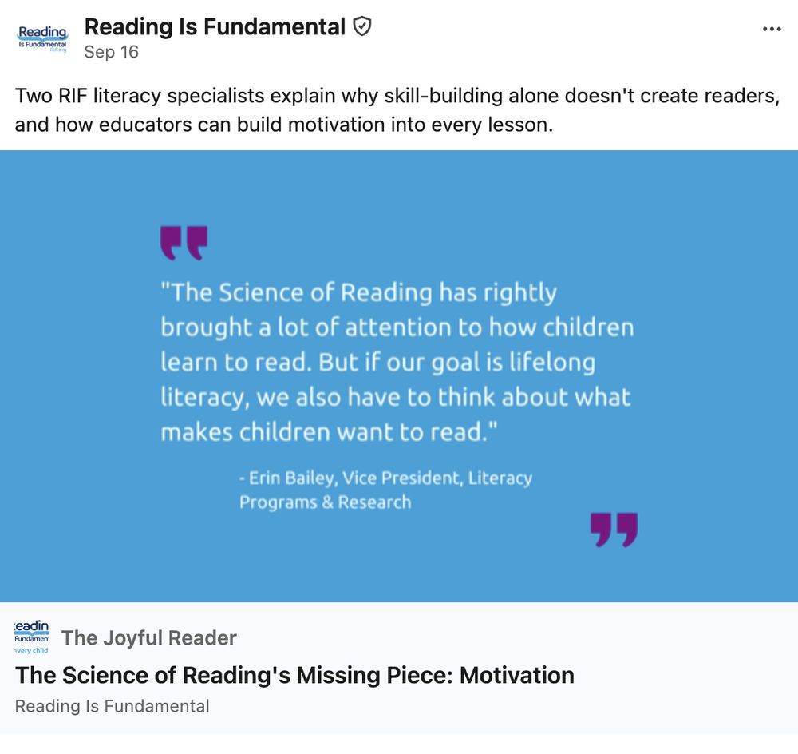

RIF needed a direct line to the educators, funders, and nonprofit leaders who shape children's literacy. I launched The Joyful Reader, a LinkedIn newsletter built on RIF's own literacy experts. It reached 2,514 subscribers in 14 weeks, with no paid promotion.
subscribers in 14 weeks, with no paid promotion
of subscribers are senior-level or above
of RIF's LinkedIn followers opted in to the newsletter
engagement rate across 4,669 article views
LinkedIn is where RIF reaches the people who fund, shape, and run literacy programs: program directors, development officers, policy advisors, and foundation staff. Audience research showed they read long-form articles from credible voices and forward impact data to their teams.
But a feed post disappears in a day. RIF needed a recurring format that would build a relationship with this audience, put RIF's expertise in front of them on a regular schedule, and help RIF show up when people search for literacy guidance, in search engines and AI tools alike.
About 23% of RIF's 10,749 LinkedIn followers subscribed in the first 14 weeks. Readership grew every month.

"The Science of Reading's Missing Piece: Motivation," featuring RIF's Vice President of Literacy Programs and Research, drew 62 reactions and 12 comments. Its feed post drew 61 clicks.
The newsletter also reached supporters. One reader, a CEO and board member, wrote that stories like the ones in the newsletter are why he supports RIF.
I launched The Joyful Reader: I defined the audience and format, set the publishing cadence, worked with RIF's literacy experts on each edition, and reported results to leadership. Next, every edition will end with a clear next step, so readers can move from reading to taking part.
An organization's own experts are its best content. Give them a regular platform aimed at the right readers, and the audience will come without a media budget.